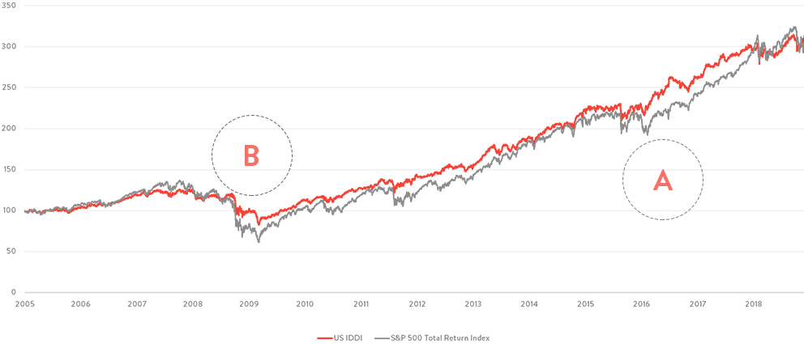

So this was the first big project I was involved in. I had the chance to work at ETS Asset Management Factory, The biggest financial advisory in Spain by AUA (assets under advice) for a period of time. This quantitative investment strategy uses machine learning to generate high risk-adjusted returns. The final portfolio consists in a very stable financial product. More specifically, I had the chance to work over several issues (along with a great team by my side):
Here you have the final product. Intelligent Data-Driven Investment (IDDI): a taylor-made (one can change the portfolio configuration for specifical investment goals) solution that lowers risk over time with a substantial drawdown reduction over periods of financial stress in the markets. Here are some graphs with the main characteristics of the product:
Cumulative Performace:
Also, a significant volatility reduction of volatility all over the history. Looking at the 1 Year rolling volatility, we see:
All the achnowledgment to ETS Asset Management (which is the proprietary of the main algorithm, methodology, data and code) and its Equities team for having developed over the years this fantastic product. Other similar products, like this one can be found here.